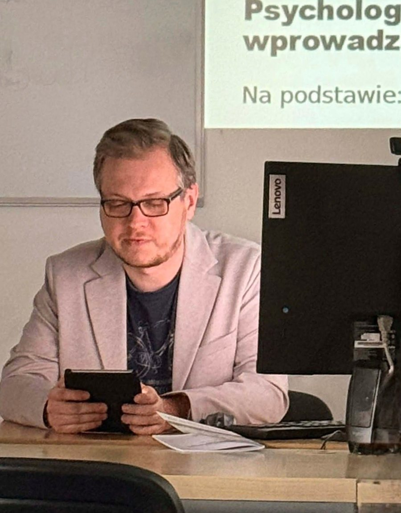

Nazywam się Paweł Wasiak. Studiuję psychologię na Akademii Humanistyczno-Ekonomicznej w Łodzi i łączę ją z pasją do technologii — programuję, korzystam z Linuksa i tworzę proste narzędzia online, które realnie komuś pomagają.
Studiuję psychologię na Akademii Humanistyczno-Ekonomicznej w Łodzi. Najbardziej interesuje mnie to, jak wiedzę psychologiczną przełożyć na coś praktycznego — nie tylko teorię z podręcznika, ale realne narzędzia, z których ktoś może skorzystać tu i teraz.
Od zawsze pociąga mnie technologia, a szczególnie miejsce, w którym spotyka się z psychologią. Sam projektuję i koduję aplikacje internetowe wspierające naukę, diagnozę i terapię — od wyszukiwarek klasyfikacji diagnostycznych (ICD-11/DSM-5), przez generator materiałów AAC, po planer sesji dla terapeutów prowadzących trening umiejętności społecznych.
Na co dzień pracuję w środowisku Linux i cenię podejście open source — proste, dostępne narzędzia bez zbędnych ograniczeń, bez konta i bez zbierania danych. To filozofia, która przyświeca też moim własnym projektom.
Chcę, żeby psychologia była praktyczna i dostępna — dlatego zamiast poprzestawać na teorii, staram się przekładać ją na proste narzędzia online: bez logowania, bez zbierania danych, bez oceniania. Łączę to z moim zainteresowaniem technologią — programuję, eksperymentuję z narzędziami open source i dbam o to, żeby to, co tworzę, było lekkie i naprawdę użyteczne.

Miejsca, w których łączę psychologię z praktyką — od edukacji o sektach, przez klasyfikacje diagnostyczne, wsparcie w trzeźwości i materiały AAC, po treści na YouTube.
Test oparty na modelu BITE Stephena Hassana — pomaga sprawdzić, czy grupa, wspólnota czy relacja Cię kontroluje. Zawiera też mój artykuł naukowy o mechanizmach kontroli na przykładzie Świadków Jehowy.
wolnaglowa.wasiakpawel.pl →Szybkie wyszukiwanie zaburzeń psychicznych po nazwie, kodzie ICD-11 czy DSM-5. Działa w pełni offline, bez logowania — praktyczne narzędzie dla studentów i praktyków.
icddsm.wasiakpawel.pl →Aplikacja wspierająca drogę do trzeźwości: licznik dni, dziennik nastroju i wyzwalaczy, kamienie milowe, kalkulator oszczędności. Dane trzymane wyłącznie lokalnie, bez konta.
niepijdzis.wasiakpawel.pl →Narzędzie do tworzenia materiałów wspomagającej komunikacji (AAC) z piktogramami ARASAAC: karty, harmonogram dnia i tablica komunikacyjna z budowaniem zdań. Stworzone z myślą o pracy z dziećmi w szkole specjalnej.
aacgenerator.wasiakpawel.pl →Aplikacja dla terapeutów prowadzących trening umiejętności społecznych (TUS): biblioteka scenariuszy, planer sesji, tracker postępów i generator historyjek społecznych z piktogramami ARASAAC. Dane offline, bez logowania.
tusplanner.wasiakpawel.pl →Zbiór standaryzowanych kwestionariuszy psychodiagnostycznych z automatycznym liczeniem wyników: GAD-7, PHQ-9, PCL-5, BDI-II i AUDIT. Bez logowania, bez zbierania danych.
kwestionariusze.wasiakpawel.pl →Kanał YouTube, na którym tłumaczę zagadnienia psychologiczne w przystępny sposób — od mechanizmów kontroli w grupach po tematy związane ze zdrowiem psychicznym.
youtube.com/@psychologia_wasiak →Masz pytanie o któryś z projektów, chcesz porozmawiać o współpracy albo po prostu podzielić się swoją historią? Chętnie odpowiem.
✉️ pwasiak30@gmail.com ☕ Postaw mi kawę na Suppi